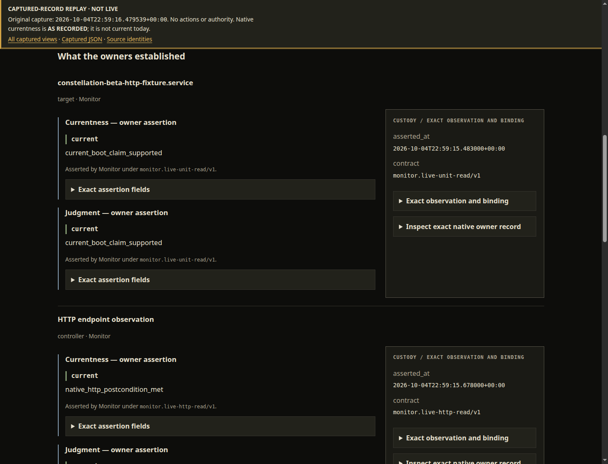
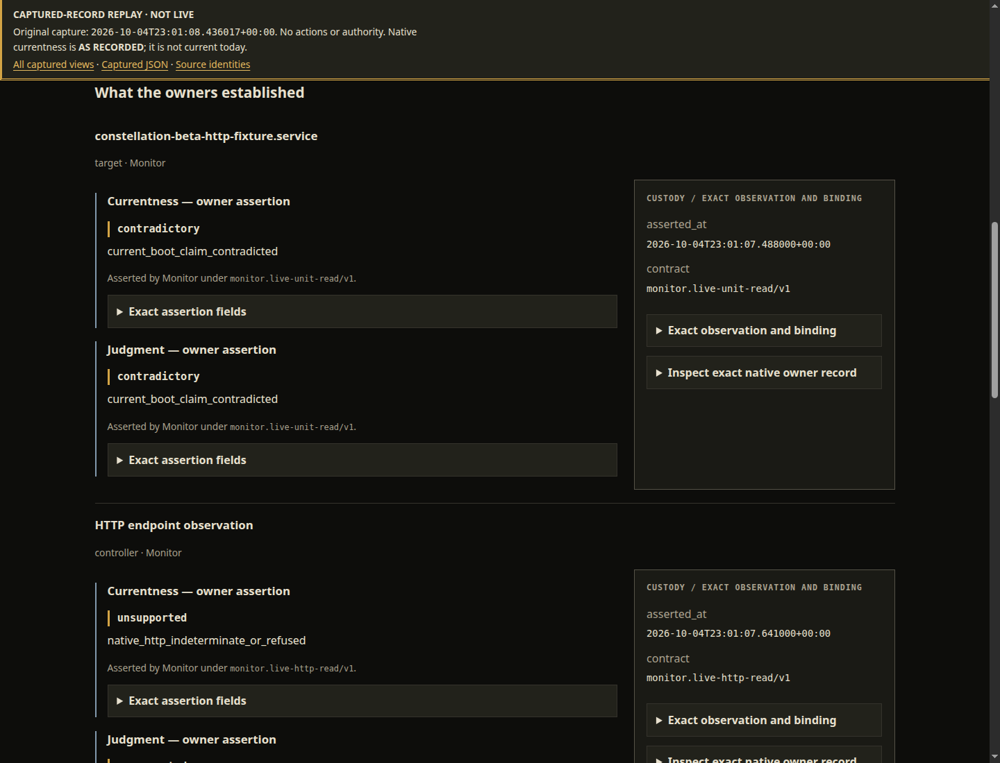
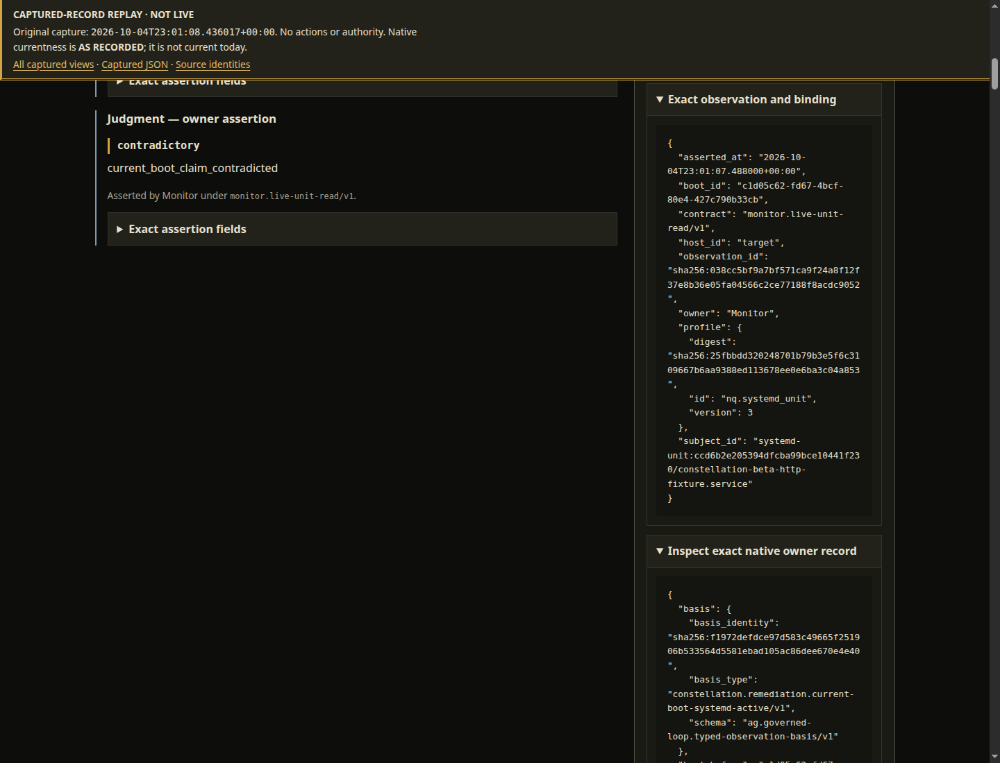
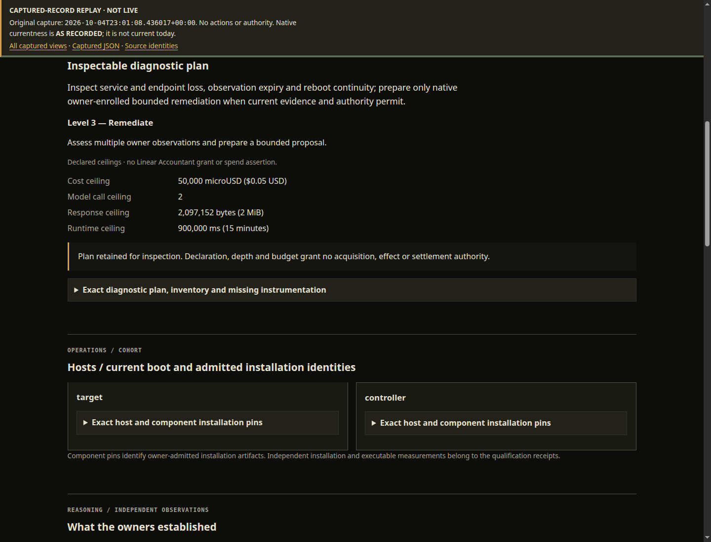
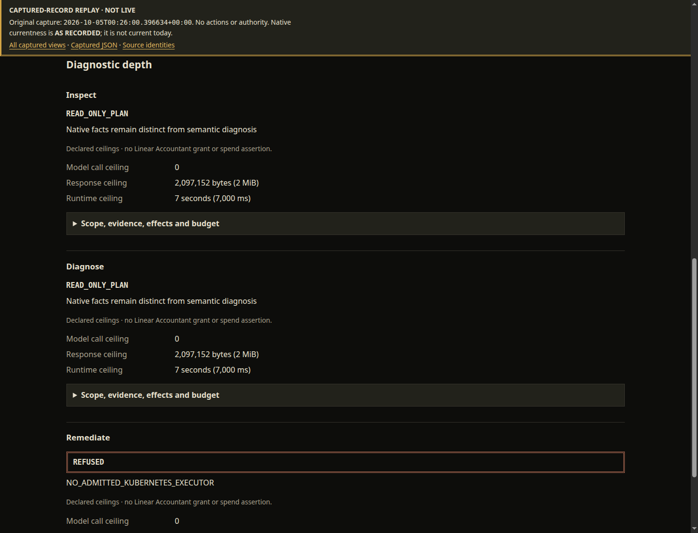
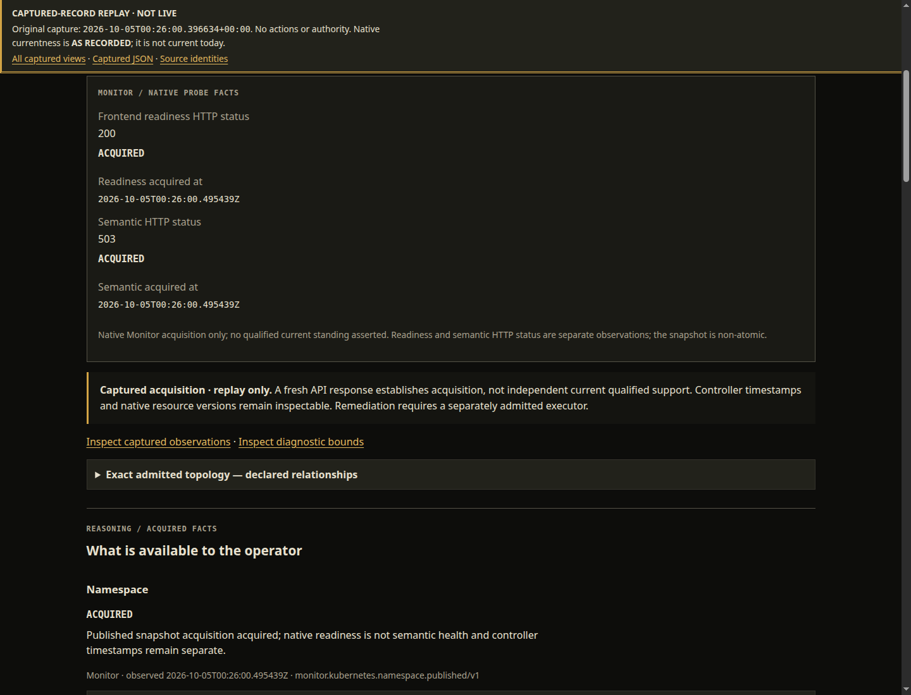
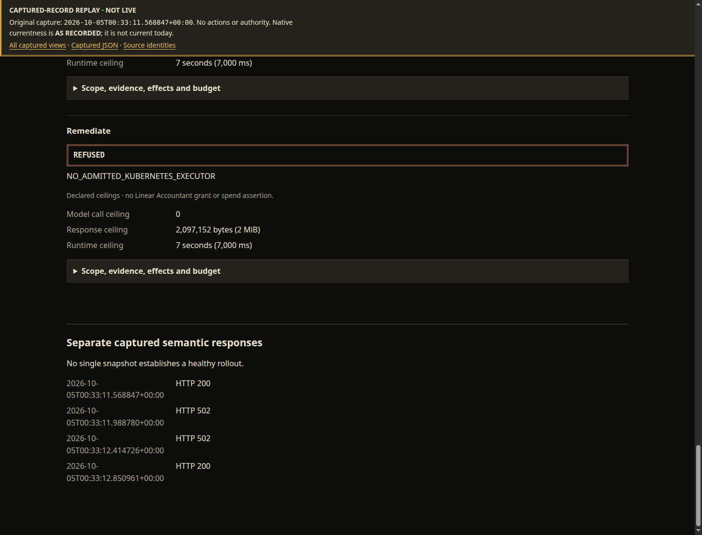
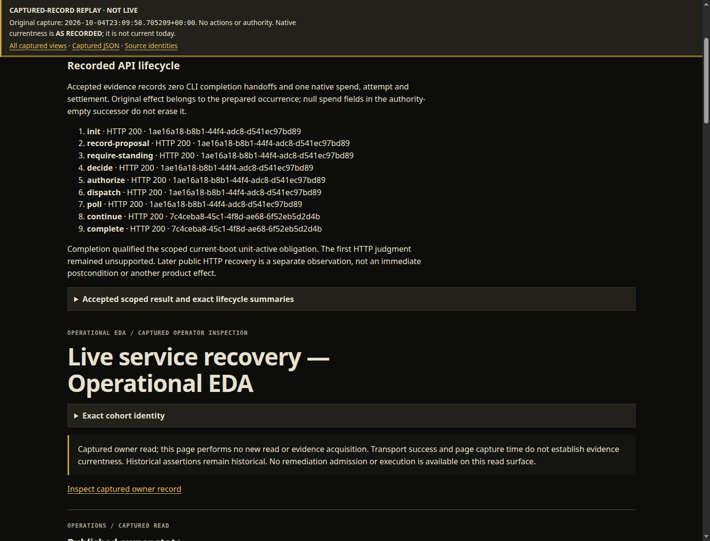

Inspect
Read the system model and current cohort. Follow application relationships and evidence; distinguish attention from unknown.
A green readiness check can miss a failed service. An alarming dashboard can miss the reason. Workbench brings the model, current observations, bounded diagnosis, and the record of a change into one human surface.
Explore the retained demo Read the qualification boundary ↓
The demo is a read-only captured-record replay with presentation polish. It does not observe or operate a live production system.
In the local VM qualification, Workbench followed a real service failure through a fresh observation, diagnosis, an authorized native unit Start, and an independent postcondition check. The operator used the HTTP surface throughout; the VM remained usable afterward.
The useful result is a traceable change: what was known, what diagnosis supported it, which exact action was allowed, what was attempted, and what a fresh observation established afterward.
One fresh native unit Start. This establishes the current forward live Operational EDA diagnostic loop for the qualified local case.
Electronic design automation gives engineers a model, instruments, checks, and a disciplined path from a design to a result. Operational EDA applies that idea to operating a system: model and instrument it, establish what is currently known, diagnose within bounds, govern changes, independently verify the result, and retain the lifecycle evidence.
This is a working analogy and a project direction, not a claim that Operational EDA is already a mature industry category.
Read the system model and current cohort. Follow application relationships and evidence; distinguish attention from unknown.
Ask a bounded question against the available evidence. A diagnosis can include a typed refusal when the evidence or supported scope is insufficient.
Review an exact proposed change. Authorization, execution custody, and independent verification remain separate responsibilities.
Inspect, Diagnose, and Remediate describe depth of interaction. They do not describe qualification tiers or grant permission by themselves.
A second qualification used a three-node k3d/k3s application: frontend → API → SQLite state. Workbench exercised observation and diagnostic-plan surfaces across nine externally injected conditions in that application relationship.
These are bounded application cases, not real node boot or DiskPressure qualification, and not a full Level 3 claim.
The retained demo follows healthy observation, service attention, diagnostic evidence, a bounded plan, refusal, application relationships, mixed versions, and a governed attempt.

Target unit and controller HTTP observations in the VM cohort agreed at the original capture. Historical read-only replay; not current evidence today. Captured-record replay.
Inspect this captured record →
Target unit loss and the independently scoped HTTP judgment call for review. Native unsupported/indeterminate distinctions remain as recorded. Captured-record replay.
Inspect this captured record →
Exact subject, owner evidence and provenance remain inspectable. Owner currentness is quoted at capture time; this record is historical now. Captured-record replay.
Inspect this captured record →
Inspect the declared objective, evidence requirements and ceilings. A displayed budget neither reserves inference stock nor grants effects. Captured-record replay.
Inspect this captured record →
Remediate is explicitly refused: NO_ADMITTED_KUBERNETES_EXECUTOR. The application observation interface creates no cluster-change authority. Captured-record replay.
Inspect this captured record →
Frontend readiness HTTP200 and semantic HTTP503 coexist in the recorded frontend → API → SQLite relationship. Captured-record replay.
Inspect this captured record →
Separately timed v1/v2 observations preserve mixed-version identity and semantic variation. Running or ready replicas do not establish a healthy rollout. Captured-record replay.
Inspect this captured record →
Nine Workbench HTTP lifecycle actions, one native effect, zero CLI handoffs. Scoped unit postcondition and later HTTP recovery remain separate. Captured-record replay.
Inspect this captured record →A deeper interaction is not a higher qualification tier. A longer campaign is not broader system coverage. Keep all three axes visible.
Presentation and local test-fixture behavior.
Running process and request boundaries.
Bounded native service behavior in a local VM.
The current forward diagnostic loop is established for the qualified local case.
Observation and diagnosis established within the application boundary; Kubernetes remediation remains refused.
A future qualification scope, not a current result.
Intensity describes the campaign’s repetition and scrutiny. A retained earlier 1,000-case soak recorded 486 good results, 351 correct refusals, 163 correct indeterminate outcomes, and zero failures. That is a different campaign; it is not the orchestrated application campaign’s throughput result.
Workbench is the human surface over distinct observation, diagnosis, authorization, and execution responsibilities. The demonstrated loop does not exercise every component. A source map describes available roles; it does not establish their participation in this run.
Workbench keeps the observation, diagnosis, proposed action, attempted change, and independent result legible together. The next step is to inspect the retained record and its boundaries.
Explore the retained demo →